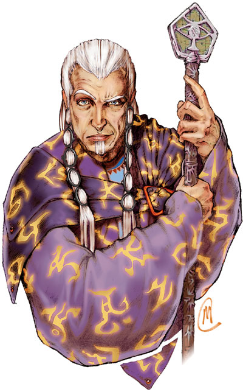
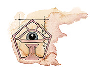

博卡布（Boccob）

无视凡尘者，魔法之主，众神中的大法师
强大神力
圣徽：守衡之眼

所在位面：The Outlands
阵营：绝对中立
神职：魔法，奥术知识，远见卓识，平衡
信徒：法师，术士，魔术师，哲学家，贤者
牧师阵营：混乱中立，守序中立，绝对中立，中立邪恶，中立善良
领域：知识，魔法，诡术
偏好武器：木棒
魔法之神博卡布的外形一般是一位身着宽松紫色外衣的，不能确定其年龄的英俊男子。发光的金色古代文字在他的衣服上游移和变幻着。他几乎没有什么追随者，但他似乎是根本不关心这一点。
教义
博卡布是一位冷漠的神祗，他除了经常宣布“魔法是世界上最重要的力量，——比之什么善良，邪恶，秩序或混乱更为重要”之外，不关心，也不去促进任何事的发展。他的牧师大多数都严守中立。博卡布的宗教典籍建议他的信徒们去探索善良与邪恶，秩序与混乱之间的平衡，并维持这些平衡的存在。
这种在政治上，伦理道德上，以及哲学等事务上的坚定中庸之道，造成了博卡布及他的追随者的必然孤立。不过，博卡布的信徒依然由于他们的知识及魔法力量而被尊重，他们的建议也被认为是很有价值的（只要不是完全采纳）。
神职人员与神殿
博卡布的牧师偏好穿着紫色且镶金边的祭袍，大多数为牧师/法师或是牧师/术士兼职者。他们大多数远离喧嚣的尘世，并把全身心都投入到魔法的研究和预言上。不过，他们对于交流预言结果这一点持非常保守的态度，以免某些人因而变得非常强大，打破了原有的平衡。博卡布的神职人员对于对于制造魔法物品并售卖它们非常的积极，这也是他们的重要维生手段。特别是在战争期间，他们会高兴地把魔法物品卖给交战双方。很多博卡布的牧师整日忙于做些关于魔法的学问，修复遗迹中找出的魔法物品，或者是调查神秘事件。他们坚决地、强硬地反对任何摧毁魔法物品或者魔法区域的做法。
博卡布的神殿一般坐落于大城市里。他们大多准备有预防外界影响和干涉的方法，维持神殿里的宁静。每个神殿中都会拥有一个藏书量多且范围广泛的大图书馆。大多数的神殿中还会装备有各式各样的探知设备。神殿里的神职人员们会使用这些设备以警戒入侵者并观察周边的确的环境。
去博卡布神殿访问的人从来不会受到神职人员的欢迎，他们能得一声冷淡的问候已经是最好的了。当然，他们如果想让神殿帮忙检查一件独特的魔法物品，或者出钱让神职人员们帮忙施展个什么法术，再或者是来买些什么信息的话，情况又会有所不同。
博卡布
法师20级/牧师20级
中体外界生物
神格等级：17
生命骰：20d8+140（外界生物）加20d4+140（法师）加20d8+140（牧师）（820hp）
先攻调整值：+12（+8敏捷，+4精通先攻）
速度：60尺
防御等级：79（+17神格等级，+8敏捷，+30天生防御，+14偏转）
攻击加值：博卡布之杖 +69/+64/+59/+54近战，或者法术 +64近战接触或 +65远程接触。攻击检定掷骰总是取20，伤害按重击伤害计算
伤害加值：博卡布之杖 1d6+12；或者使用法术。伤害检定总是按最大结果计算（杖造成18点伤害）
占据/危险范围：5尺*5尺/5尺
特殊攻击：每日12次驱散不死生物，领域神力，超凡神圣能力，类法术能力
特性：神术免疫，伤害减免 52/+4，火系法术抗力 37，神术自发性施法，理解、交谈及阅读所有语言并直接于任何17里内的生命存在交谈，远程沟通，神祗国度，随意无误传送，随意位面旅行，魔宠（猫头鹰），SR69，神圣光环（17里，DC36）
豁免调整值：坚韧 +58，反射+57，意志+60。豁免检定掷骰自然结果总是取20
能力值：力量 24，敏捷 27，体质 28，智力 50，感知29，魅力 29
技能：炼金术 +100，估价 +70，唬骗 +49，专注 +89，交涉 +83，易容 +82，收集信息 +69，躲藏 +71，威吓 +28，方知识（奥术） +127，知识（建筑与工程） +80，知识（地理） +80，知识（历史） +100，知识（地方） +80，知识（自然） +87，知识（皇室与贵族） +80，知识（宗教） +100，知识（位面） +100，知识（不死生物） +100，聆听 +56，专业（药剂师） +89，专业（书记） +89，探知 +100，搜索 +80，察言观色 +59，辩识法术 +127，侦察 +71。技能检定掷骰自然结果总是取20
专长：警觉，制造药水，格斗施法，制造魔法武器与盔甲，制造权杖，制造法杖，制造魔杖，制造奇物，法术强效，法术扩大，远避物质，法术扩展，制造戒指，高级法术渗透，提升法术，精通先攻，钢铁意志，法术极效，法术瞬发，法术增远，神圣法术，抄录卷轴，法术默发，法术渗透，法术定发。
神圣免疫：属性伤害，属性吸取，酸，冷，即死效果，疾病，瓦解，电，能量吸取，心智影响效果，麻痹，毒，睡眠，震慑，变形，监禁，放逐。
超凡神圣能力：改变现实，改变大小，奥术熟稔，区域神力护盾，自动魔法转换（奥术瞬发），自动魔法转换（奥术默发），自动魔法转换（奥术定发），天神下凡，操控生物（任何具有施法能力或具有类法术能力的生物），制造人工生命，制造高级物品，制造物品，神力风暴，神力护盾，神力技能专攻（知识[奥术]），神力技能专攻（辩识法术），神力施法，增强法术抗力，立即反制法术，看破魔法，自发奥术施法
领域神力：施展预言系法术时，施法者等级加1；使用魔法物品时视作30级法师
类法术能力：博卡布可以相当于施法者等级为28级使用预言系法术能力，以相当于施法者等级为27使用其他类法术能力。类法术能力的基本豁免DC为36+法术等级。Antimagic field,change self,clairaudience/clairvoyance,confusion,detect secret doors,detect thoughts,discern location,dispel magic,divination,false vision,find the path,foresight,identify,imbye with spell ability,invisibility,legend lore,mislead,Mordenkainen's disjunction,nondetection,Nystul's undetectable aura,polymorph and object,protection from spells,screen,spell resistance,spell turning,time stop,ture seeing.
每日神术：6/9/8/8/8/8/6/6/6/6；基础DC=19+法术等级
每日奥术（0-21级）：4/9/9/9/9/8/8/8/8/7/4/4/4/3/3/3/3/2/2/2/2；基础DC=30+法术等级
财产：博卡布之杖，包括Staff of the magi，Staff of power，以及 +5护身木棒三者的特性。
其他神圣能力：
作为一个强大神力，博卡布在任何掷骰中（包括攻击骰，伤害骰，豁免）自动取最高值，他是不朽的。
感知：博卡布可以看见，听见，触摸和嗅到17里的距离。他可以以一个标准动作感知到任何动物，他的信徒，圣迹，与他有关的物体和任何他的名字在一个小时内被说出的地点周围17里内的一切。她能够立即将她的感知延伸到20个地方。她立即能够在2个地方阻止神格等级等于或者小于她的神的感知力量，时间最长可达 17个小时。
神职感知：博卡布可以感知到尘世间七周前或七周后所发生的任何使用魔法（包括施法，使用魔法物品，使用类法术能力，或者制造魔法物品）的事件。他有可以感知到尘世间七周前或七周后任何在奥术知识领域所发生的发现，发明，记录，或是共享等事件。他可以感知到尘世间七周前或七周后人们任何的预言和预测（无论准确与否）及其他改变了善良与邪恶，秩序与混乱之间的平衡的事物。
自动动作：博卡布能够以一个自由动作使用任何他的知识系技能，甚至是他所未受训的，只要该项任务的DC在30或者更低。她博卡布还能以一个自由动作使用他的知识（奥术）和辨识法术技能，只要该项任务的DC在47或者更低。每轮能够完成20个类似的自由动作。
创造魔法物品：作为魔法之神，博卡布可以创造任何魔法物品。
化身
尽管博卡布可以同时分散为20个化身，但他很少这么做。博卡布的化身与他自己的形象非常之像：壮年的英俊男性形象。他们当然也要穿着镶金边的紫色外袍。
博卡布的化身：博卡布的化身：如同博卡布的本体，但神格等级为8；防御等级62（接触31，措手不及53）；攻击加值 +60/+55/+50/+45近战（1d6+12，博卡布之杖），或法术 +55近战接触或 +56远程接触；特性：伤害减免 43/+4，火系法术抗力 28，SR40，神圣光环（800尺，DC27），豁免调整值 坚韧 +49，反射+33，意志+51；所有技能调整值减9
超凡神圣能力：改变大小，奥术熟稔，自动魔法转换（奥术瞬发），自动魔法转换（奥术定发），操控生物（任何具有施法能力或具有类法术能力的生物），神力护盾，神力施法，立即反制法术，看破魔法，自发奥术施法
类法术能力：施法者等级为18级，基本豁免DC为27+法术等级